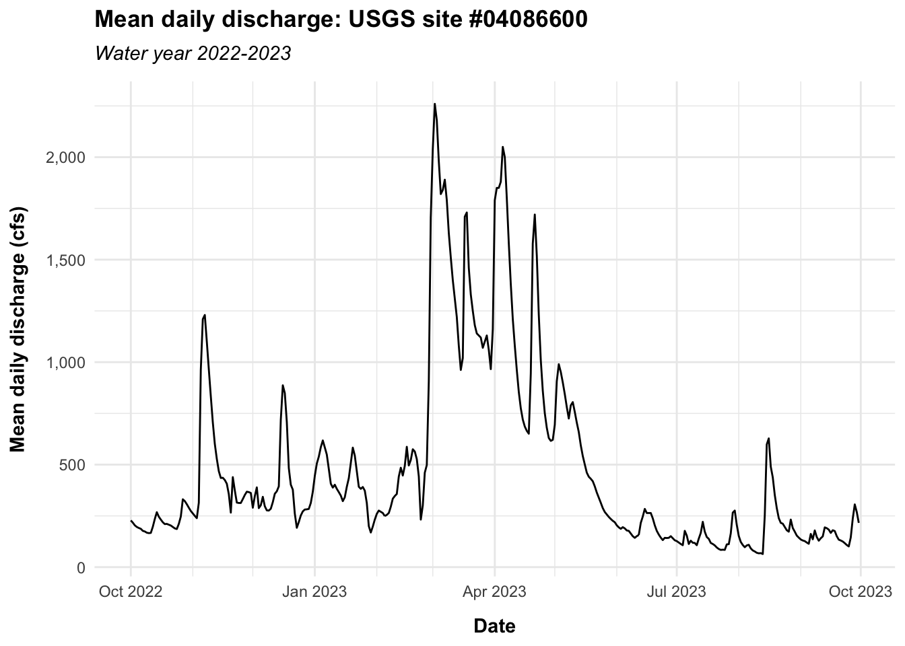

site <- "04086600"
start_date <- lubridate::as_date(x = "2022-10-01")
end_date <- lubridate::as_date(x = "2023-09-30")dataRetrieval user package testing
Introduction
This script is part of user testing for the United States Geological Survey dataRetrieval R package. As part of user testing, users are asked to conduct an analysis that addresses this prompt:
You are working on an annual report of discharge and water temperature at the Milwaukee River near Cedarburg, Wisconsin, site #USGS-04086600. Your tasks are: a) download the daily data for stream discharge and water temperature between Oct 1, 2022 and Sept 30, 2023; b) create time-series plots of the data, one for each variable.
Data exploration
I started by exploring the parameter and statistic codes that are relevant to this prompt. To retrieve relevant parameter codes, I:
- visited
readNWISdv()function documentation - clicked the link provided for daily value documentation and navigated to the section that addresses parameter codes
- clicked the link provided for the parameter codes list
- clicked the link provided for the html page of physical parameter codes
I then extracted a list of all parameter codes associated with discharge and water temperature that I might use to answer this prompt.
parameter_codes <- tibble::tribble(
~parameter_code, ~description,
"00010", "Temperature, water, degrees Celsius",
"00011", "Temperature, water, degrees Fahrenheit",
"00060", "Discharge, cubic feet per second, mean, 1 day",
"00061", "Discharge, instantaneous, cubic feet per second",
"30208", "Discharge, cubic meters per second, mean, 1 day",
"30209", "Discharge, instantaneous, cubic meters per second",
"50042", "Discharge, gallons per minute",
"72243", "Discharge, cubic feet per day"
)Next, I called whatNWISdata() to explore the parameters available for the specified site and filtered the returned dataframe to retain only those observations with parameter codes of interest.
available_data <- dataRetrieval::whatNWISdata(siteNumber = site)
available_data <- available_data |>
dplyr::select(site_no, data_type_cd, parm_cd, stat_cd, begin_date, end_date, count_nu) |>
dplyr::filter(parm_cd %in% parameter_codes$parameter_code) |>
dplyr::left_join(parameter_codes, by = c("parm_cd" = "parameter_code"))
knitr::kable(available_data) |>
kableExtra::kable_styling(bootstrap_options = c("striped", "hover", "condensed"))| site_no | data_type_cd | parm_cd | stat_cd | begin_date | end_date | count_nu | description |
|---|---|---|---|---|---|---|---|
| 04086600 | dv | 00060 | 00003 | 1981-11-01 | 2025-02-11 | 15809 | Discharge, cubic feet per second, mean, 1 day |
| 04086600 | qw | 00010 | NA | 2007-09-18 | 2019-09-06 | 9 | Temperature, water, degrees Celsius |
| 04086600 | qw | 00010 | NA | 2008-07-23 | 2009-09-04 | 2 | Temperature, water, degrees Celsius |
| 04086600 | qw | 00010 | NA | 1981-11-18 | 2018-06-12 | 90 | Temperature, water, degrees Celsius |
| 04086600 | qw | 00060 | NA | 1993-09-14 | 2008-12-22 | 13 | Discharge, cubic feet per second, mean, 1 day |
| 04086600 | qw | 00061 | NA | 2007-09-18 | 2013-08-19 | 4 | Discharge, instantaneous, cubic feet per second |
| 04086600 | qw | 00061 | NA | 1981-11-18 | 2009-07-21 | 200 | Discharge, instantaneous, cubic feet per second |
| 04086600 | qw | 30208 | NA | 1993-09-14 | 2008-12-22 | 13 | Discharge, cubic meters per second, mean, 1 day |
| 04086600 | qw | 30209 | NA | 2007-09-18 | 2013-08-19 | 4 | Discharge, instantaneous, cubic meters per second |
| 04086600 | qw | 30209 | NA | 1981-11-18 | 2009-07-21 | 200 | Discharge, instantaneous, cubic meters per second |
| 04086600 | uv | 00060 | NA | 1986-10-01 | 2025-02-12 | 14014 | Discharge, cubic feet per second, mean, 1 day |
Looking at this dataframe of available data, it appears that water temperature data are not available for the period of interest (water year 2022-2023). To confirm that I have not excluded important parameter codes or have otherwise interpreted information incorrectly, I viewed the station information in the NWIS graphical user web interface. The NWIS web interface page for this site confirms that only discharge, chloride, suspended sediment concentration, suspended sediment discharge, and phosphorus are currently sampled daily; water temperature sampling has occurred as part of a discrete sampling program, but no observations are available for the study period.
Data pull
Next, I pulled daily mean discharge in cubic feet per second using the readNWISdv() function and the appropriate parameter code. To be extra sure that I’m not accidentally missing water temperature data, I also attempted to pull water temperature data with the appropriate parameter code. As expected, the resultant water temperature dataframe was empty. I could have combined these pulls, but to be clear for the purposes of this analysis, I pulled each parameter of interest separately.
flow_parameter_code <- "00060" # daily mean discharge in cfs
temp_parameter_code <- "00010" # daily mean water temperature in degrees celsius
flow <- dataRetrieval::readNWISdv(
siteNumbers = site,
parameterCd = flow_parameter_code,
startDate = start_date,
endDate = end_date
)
temp <- dataRetrieval::readNWISdv(
siteNumbers = site,
parameterCd = temp_parameter_code,
startDate = start_date,
endDate = end_date
)dplyr::glimpse(flow)Rows: 365
Columns: 5
$ agency_cd <chr> "USGS", "USGS", "USGS", "USGS", "USGS", "USGS", "USGS…
$ site_no <chr> "04086600", "04086600", "04086600", "04086600", "0408…
$ Date <date> 2022-10-01, 2022-10-02, 2022-10-03, 2022-10-04, 2022…
$ X_00060_00003 <dbl> 228, 217, 204, 196, 191, 187, 177, 174, 168, 166, 167…
$ X_00060_00003_cd <chr> "A", "A", "A", "A", "A", "A", "A", "A", "A", "A", "A"…dplyr::glimpse(temp)Rows: 0
Columns: 4
$ agency_cd <chr>
$ site_no <chr>
$ dateTime <dttm>
$ tz_cd <chr> Cleaning
The data don’t need much in the way of cleaning, but let’s fix column names for clarity.
flow <- flow |>
dplyr::rename(
agency_code = agency_cd,
date = Date,
flow_cfs = X_00060_00003,
qual_code = X_00060_00003_cd
)Visualization
Lastly, I visualized the data, as the prompt requested. I decided against “visualizing” the empty water temperature data with an empty plot for the sake of time, though that’s certainly possible to do.
# In this script I have defaulted to fully qualifying function calls for
# clarity, but that's annoying with ggplot2 syntax, so let's load ggplot2
library(ggplot2)
ggplot(data = flow) +
geom_line(aes(x = date, y = flow_cfs)) +
scale_x_date(
name = "Date",
minor_breaks = "1 month",
date_labels = "%b %Y"
) +
scale_y_continuous(
name = "Mean daily discharge (cfs)",
labels = scales::comma
) +
labs(
title = glue::glue("Mean daily discharge: USGS site #{site}"),
subtitle = "Water year 2022-2023"
) +
theme_minimal() +
theme(
plot.title = element_text(face = "bold", margin = margin(b = 7.5)),
plot.subtitle = element_text(face = "italic", margin = margin(b = 10)),
axis.title.x = element_text(face = "bold", margin = margin(t = 10)),
axis.title.y = element_text(face = "bold", margin = margin(r = 10))
)